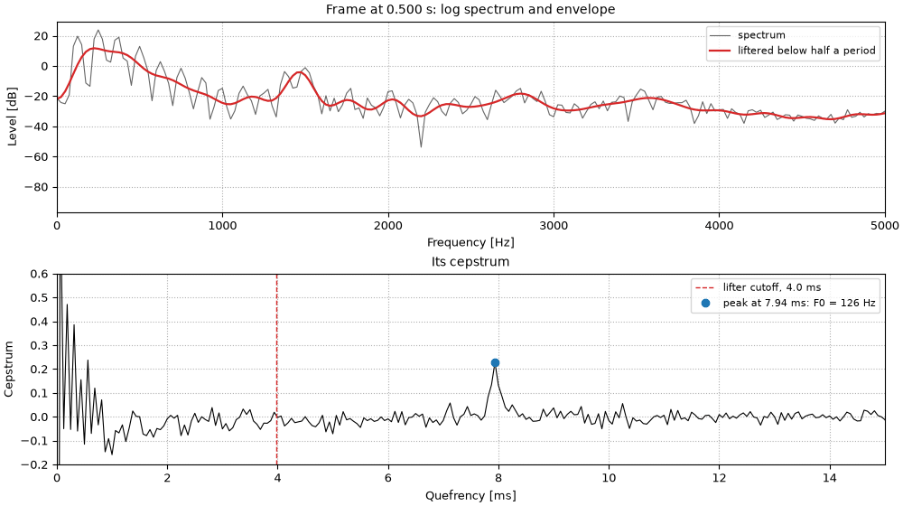

One frame
Top: the frame's log spectrum and the liftered envelope. Bottom: its cepstrum, with the peak at one period. The envelope runs a few dB under the harmonic peaks because the lifter averages the peaks with the dips between them; spectral-envelope estimators such as WORLD's CheapTrick correct for this (Morise, 2015).

Code
i = int(np.argmin(np.abs(cep.t - 0.50)))
_, f0_all, peak_all = cep.f0()
t_frame, f0_frame, peak_frame = cep.t[i], f0_all[0, i], peak_all[0, i]
cutoff = 0.5 / f0_frame # half a period
envelope = cep.lifter(cutoff).envelope()[0, :, i]
fig, (ax0, ax1) = plt.subplots(2, 1, figsize=(10, 5.6), layout="constrained")
ax0.plot(stft.f, 20 * np.log10(np.abs(stft.data[0, :, i])), color="0.4", lw=0.8, label="spectrum")
ax0.plot(stft.f, 20 * np.log10(envelope), color="tab:red", lw=1.6, label="liftered below half a period")
ax0.set(
xlim=(0, FMAX),
xlabel="Frequency [Hz]",
ylabel="Level [dB]",
title=f"Frame at {t_frame:.3f} s: log spectrum and envelope",
)
ax0.legend(loc="upper right", fontsize=8)
q_ms = cep.q * 1e3
ax1.plot(q_ms, cep.data[0, :, i], color="k", lw=0.8)
ax1.axvline(cutoff * 1e3, color="tab:red", ls="--", lw=1, label=f"lifter cutoff, {cutoff * 1e3:.1f} ms")
peak_label = f"peak at {1e3 / f0_frame:.2f} ms: F0 = {f0_frame:.0f} Hz"
ax1.plot(1e3 / f0_frame, peak_frame, "o", color="tab:blue", label=peak_label)
ax1.set(xlim=(0, 15), ylim=(-0.2, 0.6), xlabel="Quefrency [ms]", ylabel="Cepstrum", title="Its cepstrum")
ax1.legend(loc="upper right", fontsize=8)
for ax in (ax0, ax1):
ax.grid(ls=":")